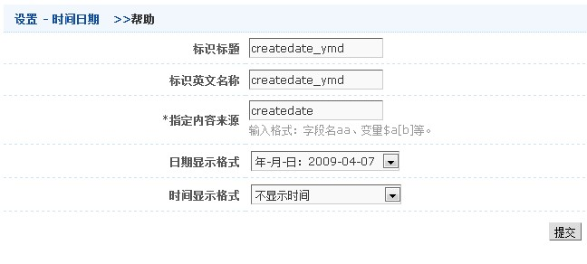

示例4(带栏目的标题列表)
效果:
 原html代码:
原html代码:
<li><i class="time">2010-10-10</i>栏目<a title=" " target="_blank" href="#">标题标题标题标题标题标</a></li>
<li><i class="time">2010-10-10</i>栏目<a title=" " target="_blank" href="#">标题标题标题标题标题标</a></li>
<li><i class="time">2010-10-10</i>栏目<a title=" " target="_blank" href="#">标题标题标题标题标题标</a></li>
<li><i class="time">2010-10-10</i>栏目<a title=" " target="_blank" href="#">标题标题标题标题标题标</a></li>
<li><i class="time">2010-10-10</i>栏目<a title=" " target="_blank" href="#">标题标题标题标题标题标</a></li>
标识模板(template)代码:
<li><i class="time">{c$createdate_ymd}</i>{c$cate}<a title="{subject}" href="{arcurl}">{c$subject32}</a></li>
说明：{c$createdate_ymd}是时间日期;{c$cate}为类目结点(详细可见类目结点，需要注意的是追塑选择“二级类目”选项)
时间日期标签{c$createdate_ymd}的设置整体截图如下
